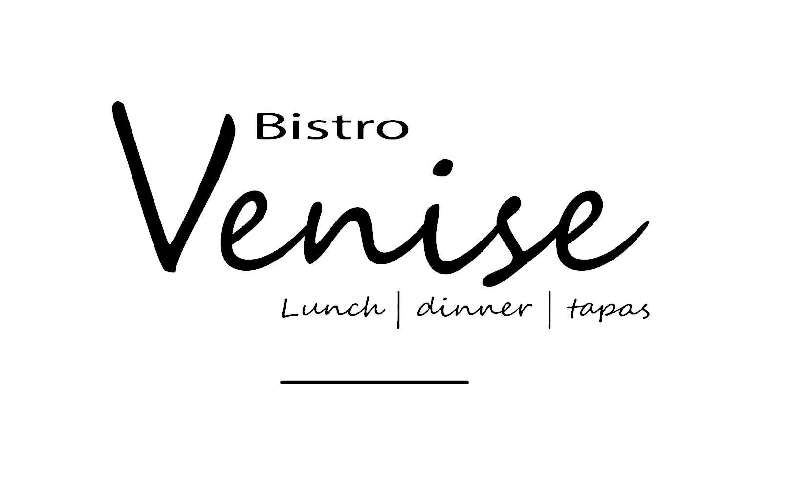

Restaurant & Bistro Venise
Oostduinkerke
Tijdstip: {{time}}
Tafel: {{table}}
{{people}} personen
Welkom {{name}}
Laat ons beginnen met het belangrijkste:
Wij wensen jullie een prettige dag en smakelijk eten toe !!!
Geniet nu van je gezelschap, de omgeving en het eten.
Jullie zijn natuurlijk niet naar hier gekomen om onze krant te lezen maar vooral om culinair te genieten en daar gaan we met plezier voor zorgen.
SCAN voor de volledige menu en prijzen
Tapas (à 1 à 2 pers)
- kaasballetjes gefrituurd (10st. €8,90)
- bloemkoolroosjes (€6,20)
- kippeboutjes gefrituurd (6st. €12,90)
- Kaasstengels Oude Kaas (6st. €12,90)
- Camembert WARM (€17,90)
- Crevettes Royal 6 st. (€18,20)
- Garnaalkroketjes mini (8st. €27,80)
- 1/2 pot mosselen natuur (€21,90)
- met wijn | met look | v/h huis (€23,90)
- Potje paté 100gr. (€11,90)
- Scampi in pankojasje (4st. €19,40)
- Spaanse ham gedroogd (€20,90)
- Duo van olijven & Tapenade (€11,90)
- Vleeskroketjes 'Royal' mini 10st. (€17,90)
- Witte worst gegrild (€12,90)
- Zalm gerookt 'PREMIUM' (€25,90)
Dagsuggesties - Voorgerechten
- Vitello Tonnato (€18,90)
- Carpaccio gemarineerd rund (€23,90)
- Ganzeleverpastei (€23,40)
- Jacobsnootjes 3st. duroc-ham butternutzalf (€27,40)
Hoofdgerechten
- Gehaktballetjes in tomatensaus (€17,90)
- Karnemelksmeus & garnalen (€26,90)
Pasta's en rijst
Salades
- Slaatje burrata (€19,50)
- Tomaat garnalen (€33,90)
- Garnalensalade (€34,90)
- Slaatje geitenkaas (spekjes) (€23,40)
Vlees en wild
- Rundsbrochette GEGRILD (€32,90)
- Herteragout (€32,90)
- Hazerug met wildsausje (€37,60)
Vis en mosselen
- garnaalkroketten 2st. €25,90 | 3st. €30,90
- Jacobsnootjes 5st., duroc-ham butternutzalf (€34,90)
- Verse tonijn pepersaus licht gebakken (€34,90)
- Zeebaars Mousseline (€31,90)
- Zeetong gebakken (€42,80) baktijd 25 min.
- Zeeuwse mosselen Natuur (€33,90)
- Witte wijn | Look | v/h huis (€36,90)
Restaurant Venise - Albert I Laan 65 - 8670 Oostduinkerke
T: +3258514654 - www.venise.be - reservatie@venise.be